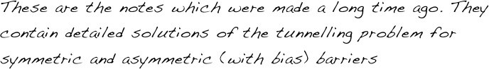
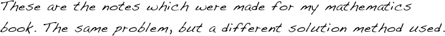

Understanding STM via tunnelling through energy barriers

1D Shrodinger equation
Asymmetric barrier
Symmetric barrier (short)
Symmetric barrier (detailed)

Symmetric barrier
Asymmetric barrier: from L to R
Return back to Lectures or to MAIN page
Asymmetric barrier: from R to L
Asymmetric barrier: the current